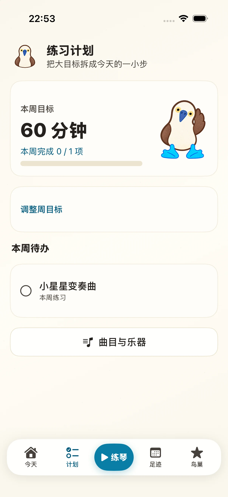
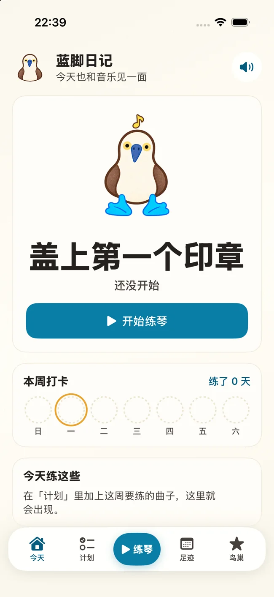
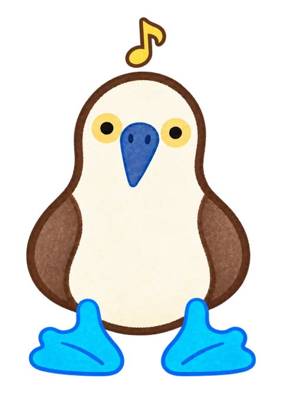
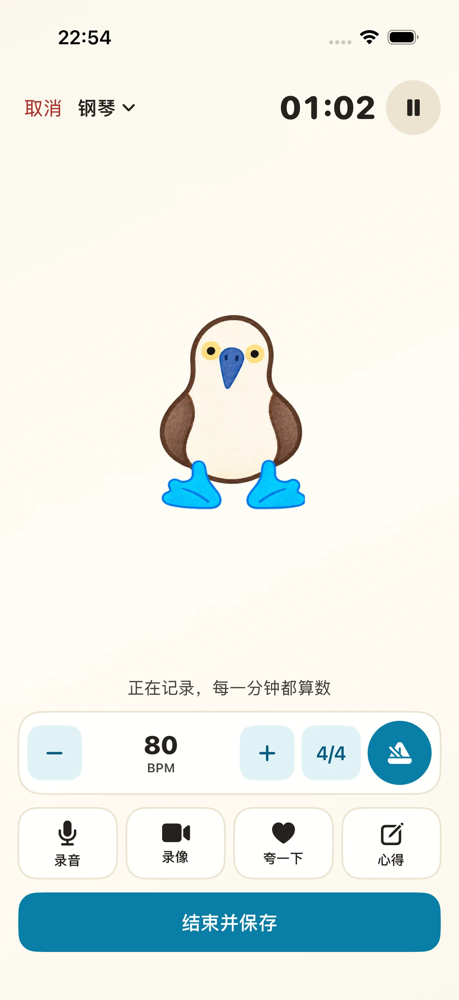
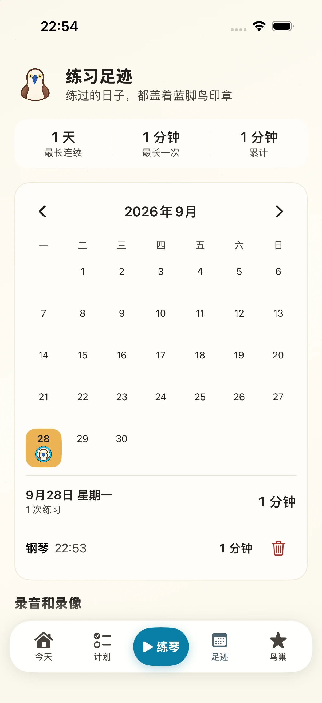

把这周的曲子排好
添加曲目与乐器，写下本周练习内容，设定周目标。保存后，曲目会进入本周待办，也会出现在「今天」页。

放大查看实际页面 ↗

一段自然的练琴时间
下面是当前 App 在 iPhone 17 Pro 模拟器上的真实页面，点开图片可以看清每个操作。
添加曲目与乐器，写下本周练习内容，设定周目标。保存后，曲目会进入本周待办，也会出现在「今天」页。

放大查看实际页面 ↗计时器、可调 BPM 与拍号的节拍器、录音、录像、心得和保存按钮都在同一屏。暂停练习时，节拍器也会停。

放大查看实际页面 ↗「足迹」日历标出练习日期，点进当天能查看时长和每次记录；录音、录像也可以从这里回放。

放大查看实际页面 ↗给孩子留一块自己的空间
蓝脚日记没有账号、家长监控或排行榜。练习记录、曲目和待办保存在这台 iPhone；录音与录像也留在本机。核心练习无需联网，只有主动使用在线曲目目录搜索时才需要网络。
蓝脚日记 · iPhone
下载入口将在 iPhone 版开放时更新。